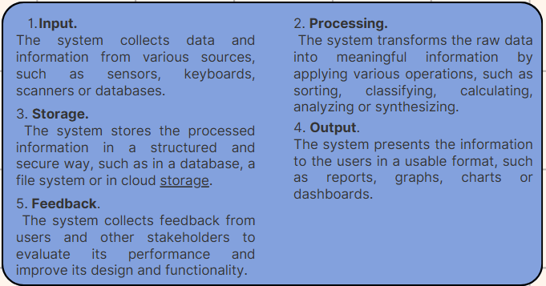

DATA AND INFORMATION
WHAT IS DATA?
A collection of unstructured, raw facts and details, such as text, observations, figures, symbols, and item descriptions, is called data. Put otherwise, data is meaningless on its own and serves no particular purpose. In addition, bits and bytes—basic information units used in computer processing and storage—are used to measure data.
WHAT IS INFORMATION?
Data is organized, processed, and structured information. It facilitates decision-making and gives data context. A restaurant's sales from a single customer, for instance, are data; however, when the company determines which dish is the most or least popular, that data turns into information.
DIFFERENCE BETWEEN DATA AND INFORMATION

WHAT IS INFORMATION SYSTEM?
An information system (IS) is a networked collection of parts that are used to gather, store, process, and send digital and analog data. Fundamentally, it is an assemblage of technology, software, data, personnel, and procedures that collaborate to convert unprocessed input into meaningful knowledge. Numerous company goals, including enhanced customer service and better productivity, are supported by an IS.
HOW DOES INFORMATION SYSTEM WORK?
An IS is a potent instrument that can combine a wide range of tasks. IT departments can efficiently gather, store, process, and distribute information for a range of uses by linking system components. Additionally, the system can generate reports for a range of devices and formats. Text documents, spreadsheets, images, and intricate data visualizations can all be found in reports. This all-inclusive platform facilitates internal operations and gives companies fast, accurate access to data.
BASIC PROCESS AN IS FOLLOWS:
DIFFERENT TYPES OF SUPPORT SYSTEMS IN IS:
1. Transaction Processing System (TPS)
Processing transactions is crucial to the day-to-day operations of enterprises. Order entry, order placing, shipping, billing customers, withdrawals, deposits, and other activities that have an impact on the business are all considered transactions. These commercial transactions are supported by TPS.
2. Office Automation System (OAS)
OAS consists of staff members designated to carry out official duties, computers, and technologies connected to communication. It supports official activity at all organizational levels and deals with office transactions, which are separated into managerial and clerical tasks.
3. Knowledge Work System (KWS)
The KWS is a specialized system that guarantees the proper application of the business's technical abilities and knowledge while speeding up the generation of new knowledge. The Knowledge Work System uses communication, graphic design, and document management capabilities to help employees create and share new information.
4. Management Information System (MIS)
Middle managers handle much of the administrative chores for day-to-day routines and performance monitoring, ensuring that all the work is aligned with the organization's needs. That's why MIS is such a valuable tool. Management Information Systems are designed to help middle managers and supervisors make decisions, plan, and control the workflow.
5. Decision Support System (DSS)
Managers can make choices with the use of the DSS, an interactive computer-based information system at the management level. Middle managers can make wise judgments by using the information provided by the Decision Support System. Different decision models are used by decision support systems to evaluate and condense vast volumes of data into a user-friendly format that facilitates information comparison and analysis for managers. These summaries are frequently presented as tables and charts.
6. Executive Support System (ESS)
Similar to the MIS, but for executive-level decision-making, is the ESS. The judgments require greater knowledge and judgment because they involve issues that affect the entire firm. Compared to the DSS, the ESS offers more computer power, more efficient display options, and increased communication. With the usage of ESS, executives can effectively make judgments based on condensed internal data from MIS, DSS, and outside sources. Executive support systems also assist in performance tracking, competition analysis, opportunity identification, and trend forecasting.